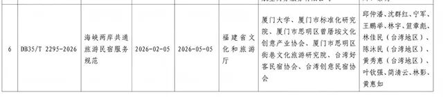
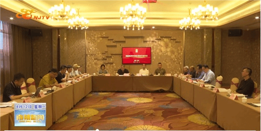

2026年2月5日，福建省市场监督管理局正式批准福建省地方标准《海峡两岸共通旅游民宿服务规范》（标准编号：DB35/T 2295—2026，下文简称《规范》），并予以公布。该标准将于2026年5月5日正式实施，第一起草单位为厦门大学，第一起草人为实验室邱仲潘副教授，起草单位还包括厦门市标准化研究院、厦门市思明区曾厝垵文化创意产业协会、厦门市思明区街巷文化旅游研究院，及台湾好客民宿协会、台湾创意民宿协会2家台湾单位，起草人包括台湾创意民宿协会理事长林佳民、台湾创意民宿协会专家陈沐民、台湾好客民宿协会前理事长黄秀惠3位台湾民宿专家。


福建省地方标准公示文件
《规范》的公布实施，将为两岸民宿产业的深度融合提供坚实的标准化支撑，进一步拓展合作空间。该标准系全国首个两岸民宿共通标准，在多个关键领域实现创新突破。标准编写组通过“市校合作+行业协同”模式，系统梳理出38项关键技术指标，初步构建起覆盖民宿设计、运营、管理全流程的标准体系框架，规定了两岸旅游民宿的经营条件、人员要求、设备设施要求、制度要求及环境卫生要求。标准起草过程中充分考虑两岸常用词汇对照以及社会文化、风俗习惯差异，方便今后两岸业者使用。
《规范》是福建省市场监督管理局2023年“两岸旅游民宿标准共通试点”项目（刚顺利通过省市场监管局评估）的主要研究成果。该项目由我校承担，实验室邱仲潘副教授担当责任人。试点期间，邱仲潘团队联合台湾创意民宿协会、厦门曾厝垵文化创意产业协会等机构，深入南靖土楼、平潭北港村等两岸民宿集聚区开展实地调研。2024年8月，海峡两岸民宿标准融合研讨会暨“海峡两岸民宿融合发展联盟”成立大会在福建南靖召开，两岸专家及民宿业主代表共同研讨该地方标准，深入探讨两岸民宿产业合作发展。

海峡两岸民宿标准融合研讨会南靖县官方视频号报道画面
两岸标准共通是福建省贯彻落实党中央、国务院关于支持福建探索海峡两岸融合发展新路决策部署的重要举措。2026年1月1日起施行的《福建省促进两岸标准共通条例》（下文简称《条例》）明确将“标准共通”纳入两岸融合发展示范区建设重点任务。根据《202年厦门市政府工作报告》，厦门市将推动“建设两岸标准共通先行城市。”在两岸标准共通获得越来越多政策支持的情况下，编写组将致力于依托《规范》，推动建立两岸民宿信息交流平台、建设两岸民宿标准认证基地，提供一站式标准宣贯、咨询、预订以及其他应用服务，探索“标准+认证+品牌”一体化发展模式，推动两岸旅游民宿成为两岸文化交流与情感融合的重要载体。